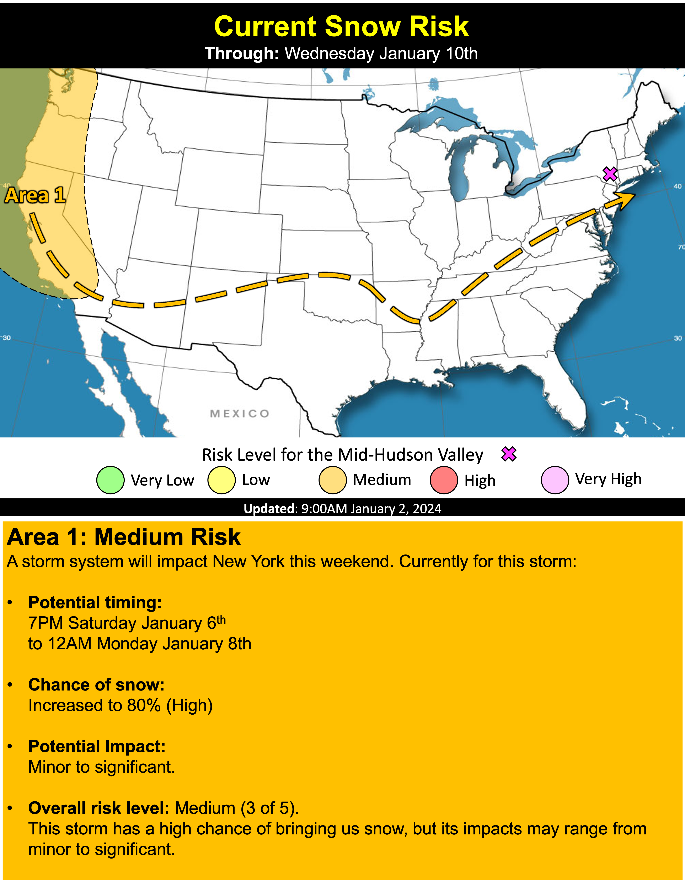
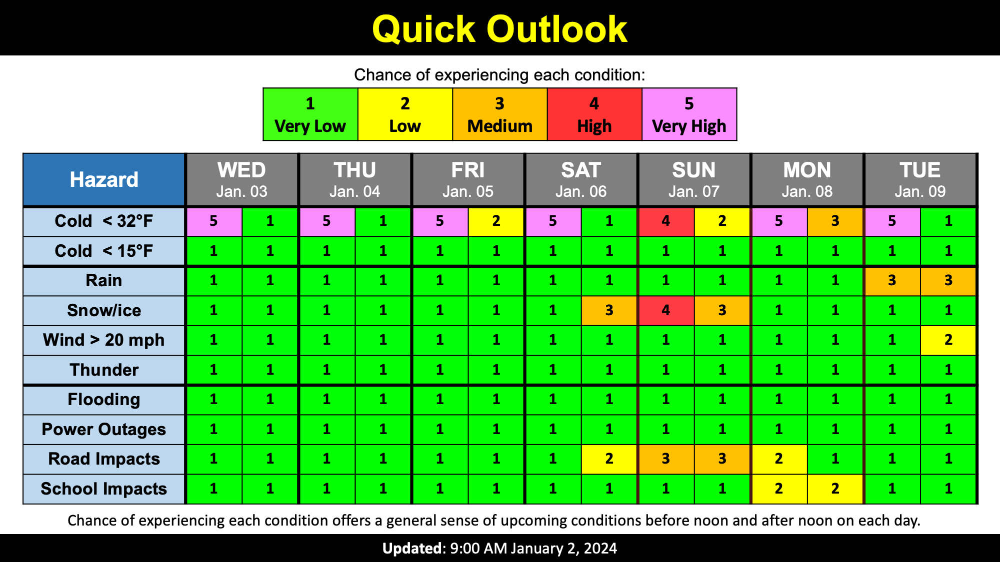

Calm week, but snow insight
School Forecast
for Monday January 1st
Last updated: 10:00AM Tuesday January 2, 2024
| 0% (Nope) |
|---|
| 0% (Nope) |
|---|
| 0% (Nope) |
|---|
___________________
10:00PM Update
Welcome to 2024! This year is off to a quiet start with a mix of sun and clouds, but all weather eyes are on this weekend as our first potential snow storm of the season approaches.
This week will feature a dry mix of sun and clouds through Friday. Temperatures will run near normal with afternoon high temperatures around 40. Overnight low temperatures will fall into the 20s. Normal temperatures for this time of year are 37 in the afternoon and 23 overnight.
As we head into the weekend, a potent storm system will impact New York. This storm is currently approaching the west coast of the US and will work its way across the US this week. At the same time, a cold high pressure area to our north will build in, reinforcing cold air over our area. The combination of the storm's moisture and cold air over the region is likely to result in an accumulating snow. Currently, expecting clouds to increase over the region on Saturday. Snow will be possible after 7PM Saturday. Snow is likely on Sunday before tapering off Sunday night.
While the big picture is set for this weekend, some sources of uncertainty remain. The first one is how far north the storm pushes. As mentioned, a cold high pressure to our north will help reinforce cold air as the storm approaches. However, this high pressure will also help steer the storm. A stronger high pressure will block the approaching storm, shunting the heaviest snow potential to our south. A weaker high pressure will allow the storm to push further northard, allowing the heaviest precipitation to spread into the Hudson Valley. We will also have to keep an eye on temperatures Sunday afternoon, particularly if a weaker high pressure allows heavier precipitation to push northward. A weakending high pressure could allow cold air to erode as the storm progresses, resulting in snow possibly changing to a mix. This range in details is expressed in the current extreme range of the snow gauge. The details are expected to become more refined as the week progresses.

While it is too early to determine exact snowfall totals for this weekends storm, now is the perfect time to make sure you are prepared for
another New York winter. Based on the current forecast, at least some road impacts are expected Saturday night through Sunday night.
Next Update:
On Wednesday
-Ethan

KingstonSnows | Kingston, New York
Website built by Ethan Burwell